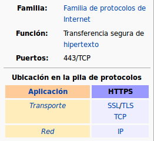

6.4. Seguridad. HTTPS
El protocolo https es idéntico al protocolo http con la excepción de que la transferencia de información entre el cliente (navegador web) y el servidor (servidor web) viaja a través de Internet cifrada utilizando robustos algoritmos de cifrado de datos proporcionados por el paquete OpenSSL. Durante la transmisión, se utilizan algoritmos de cifrado simétricos, pero para intercambiar las claves de cifrado, hay una sesión inicial de cifrado asimétrico.
{kind=link}
Los algoritmos de cifrado utilizados reúnen las características necesarias para garantizar que la información que sale desde el servidor hacia el cliente, esté cifrada y solamente pueda ser descifrada por el cliente y que la información que sale desde el cliente hacia el servidor, esté cifrada y solamente pueda ser descifrada por el servidor. Si durante la transferencia de la información un “hacker” hiciera copia de los paquetes de datos e intentara descifrarlos, los algoritmos garantizarían que no podría hacerlo por fuerza bruta (probando todas las claves posibles) en un plazo mínimo de varios años.
CONFIGURACIÓN
La configuración de una web protegida con HTTPS, independientemente del servidor que utilicemos, se realiza básicamente con los siguientes pasos:
Activar los módulos correspondientes (en el caso de Apache).
- Generar un certificado para el servidor. Recuerda conceptos certificado, clave pública/privada (https://www.manualesfaciles.com/certificados-diferencias-de-pem-crt-y-key/) → Durante la ejecución de comando contestaremos algunas preguntas como el nombre del servidor, el país, etc…
¿Ubicación de los certificados?
¿Propietario/Permisos?
Crear virtual host seguro.Incluyendo la clave privada y el certificado en la configuración
Redirigir HTTP a HTTPS → (OPCIONAL, aunque recomendable)
Activar el nuevo sitio creado → (a2ensite si estamos en Apache, ln -s en NginX)
En los siguientes enlaces puedes encontrar unos sencillos tutoriales:
Advertencia
Los ejemplos vistos se adaptan a un entorno de pruebas como el nuestro. Si estuvieras tratando con un entorno “real” deberías obtener un certificado por parte de una autoridad certificadora (CA). Tienes varias opciones:
CA de pago
Opciones gratuitas como Let’s Encrypt, aunque en este caso necesitarias un dominio real público en la web (puedes usar una alternativa gratuita tipo no-ip para hacer esto). Puedes encontrar una manual paso a paso de como configuar esto en la web, tanto para APACHE como para NGINX